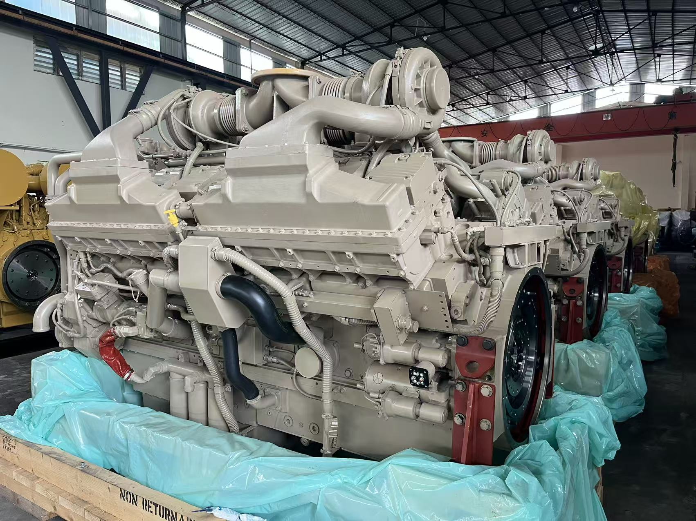
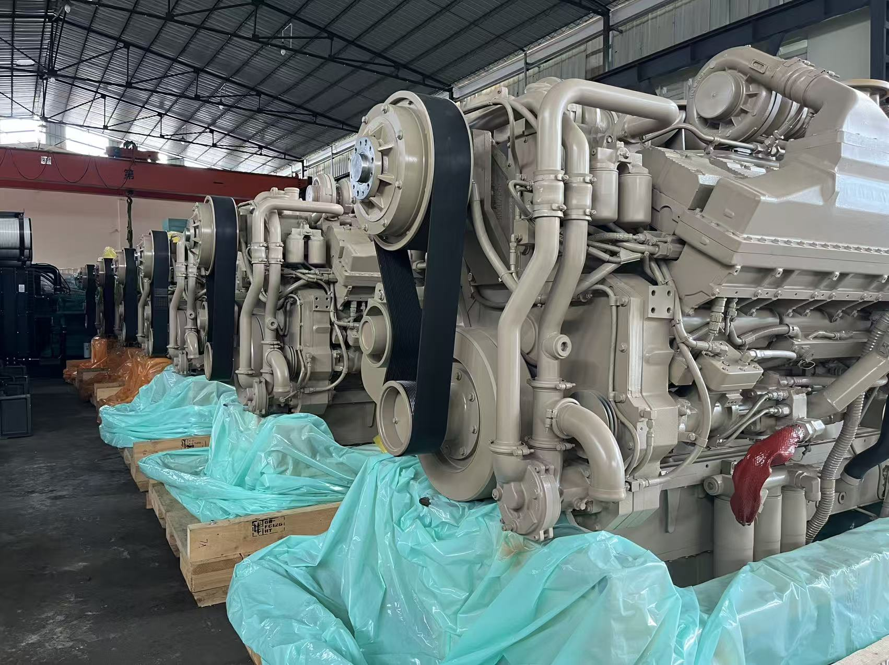
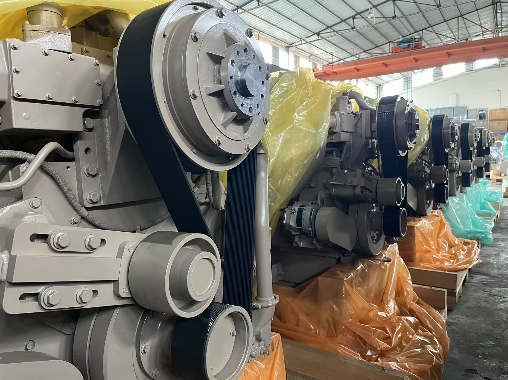
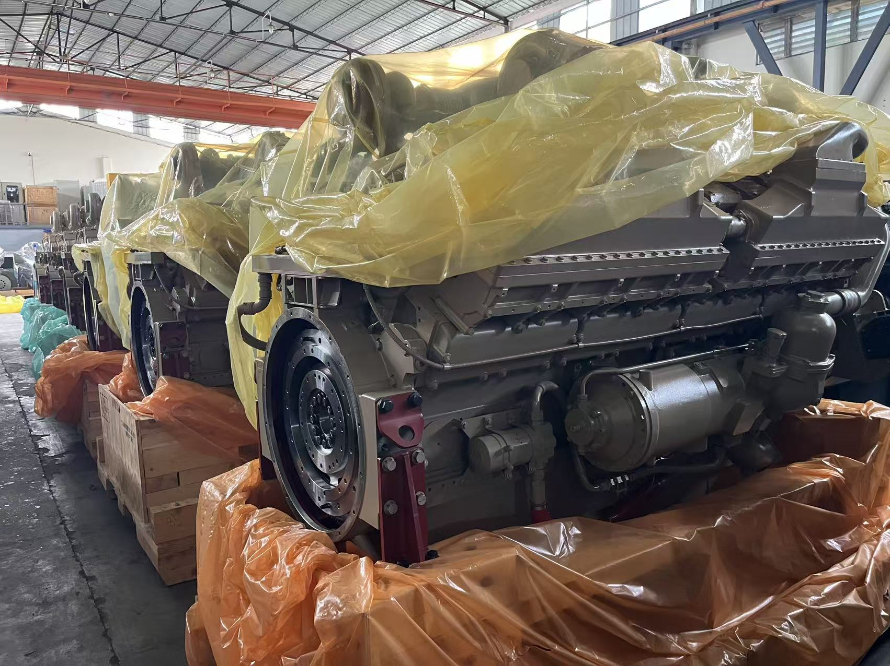
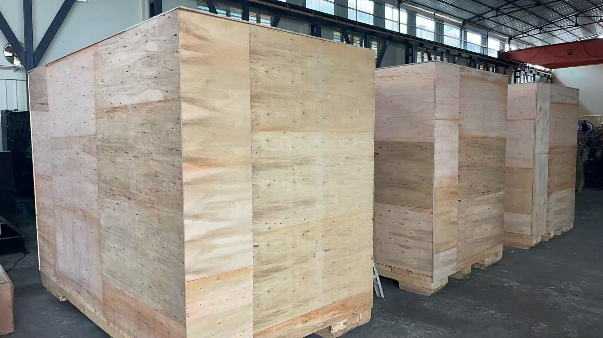
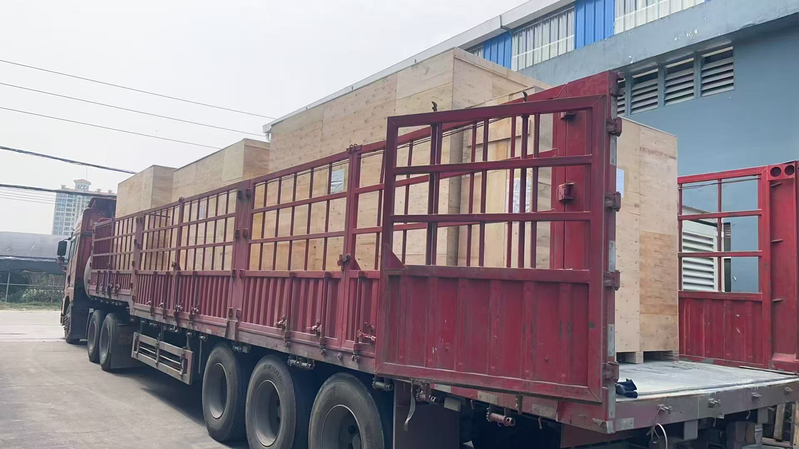
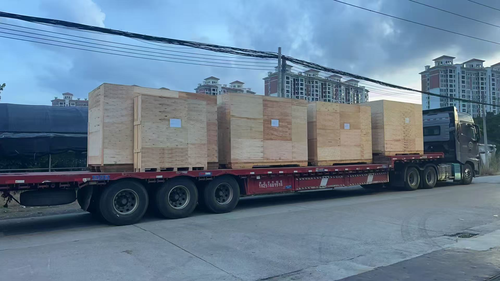

2026.07
交付 6 台 QSK60-C2237 PN405/2 发动机至 BELAZ(别拉斯)Delivery 6 pcs of QSK60-C2237 PN405/2 engines to BELAZПоставка 6 двигателей QSK60-C2237 PN405/2 для БЕЛАЗ
6 台 QSK60-C2237(PN405/2)柴油发动机完工发运 BELAZ,为 75306、75313 系列超重型矿用自卸车提供配套动力。Six QSK60-C2237 (PN405/2) diesel engines completed and shipped to BELAZ — matched power for the 75306 and 75313 series ultra-heavy mining haul trucks.Шесть дизельных двигателей QSK60-C2237 (PN405/2) изготовлены и отгружены БЕЛАЗ — комплектная силовая установка для карьерных самосвалов серий 75306 и 75313.

BELAZ(别拉斯)是全球最大的超重型矿用自卸车制造商之一。KST POWER 与 BELAZ 保持稳定的合作关系,本批 6 台 QSK60-C2237(PN405/2)柴油发动机现已完工并发运。BELAZ is internationally recognized as one of the world's largest manufacturers of ultra-heavy mining haul trucks. KST POWER maintains stable cooperative ties with BELAZ, and this batch of six QSK60-C2237 (PN405/2) diesel engines has now been completed and shipped.БЕЛАЗ — один из крупнейших в мире производителей сверхтяжёлых карьерных самосвалов. KST POWER поддерживает устойчивое сотрудничество с БЕЛАЗ; данная партия из шести дизельных двигателей QSK60-C2237 (PN405/2) изготовлена и отгружена.

该批发动机为 BELAZ 75306、75313 系列矿用自卸车专业配套供货,提供匹配的动力单元。The engines are professionally manufactured and supplied as matching power units for the BELAZ 75306 and 75313 series mining dump trucks.Двигатели профессионально изготовлены и поставляются в качестве комплектных силовых агрегатов для карьерных самосвалов БЕЛАЗ серий 75306 и 75313.

针对严苛的矿山工况打造,机组具备出色的耐久性、燃油经济性与长时连续运转的稳定性。Built to match rigorous mining working conditions, the units deliver outstanding durability, fuel efficiency and continuous running stability.Рассчитанные на жёсткие горные условия эксплуатации, агрегаты отличаются высокой надёжностью, топливной экономичностью и стабильностью при длительной непрерывной работе.

装箱前,每台发动机以气相防锈膜密封封存,确保远洋与陆运长途运输中的防护。Before crating, each engine is sealed in VCI anti-corrosion film to protect it through long-distance ocean and overland transport.Перед упаковкой каждый двигатель герметизируется в антикоррозионную плёнку VCI для защиты при длительной морской и наземной транспортировке.

机组装入按尺寸定制的重型出口胶合板箱,满足国际运输要求。The units are packed in heavy-duty export plywood cases sized to each engine, ready for international shipment.Агрегаты упакованы в усиленные экспортные ящики из фанеры, изготовленные под размер каждого двигателя и готовые к международной отправке.

装车进行中——成箱发动机固定装载,发运至港口。Loading in progress — the cased engines are secured for road transport to the port.Идёт погрузка — упакованные двигатели закреплены для доставки автотранспортом в порт.

货物驶离工厂发往 BELAZ,标志着双方持续合作下的又一次顺利交付。The consignment departs the factory on its way to BELAZ, completing another delivery under our ongoing cooperation.Партия покидает завод и направляется на БЕЛАЗ — очередная успешная поставка в рамках нашего сотрудничества.
← 返回活动与新闻← Back to Activity & News← Назад к событиям и новостям